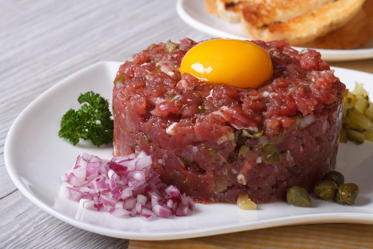

Descripción del Plato
El Tartar de Llama es un plato exótico y delicioso que destaca por su frescura y sabor. Este plato es una especialidad andina, preparado con carne de llama cruda finamente fileteada y marinada con especias autóctonas.
Ingredientes
- Carne de llama fresca
- Limón
- Sal
- Pimienta
- Hierbas andinas
- Aceite de oliva